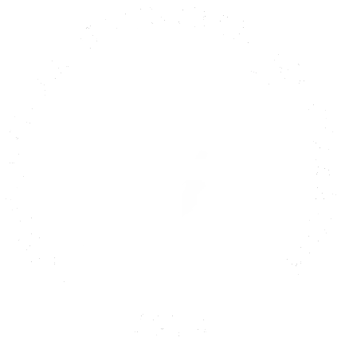

Desarrollo Web
Me interesa especialmente el desarrollo backend y la construcción de aplicaciones web.

Mi nombre es Sandra Vela y actualmente me encuentro desarrollando mi formación en el área de desarrollo web.
Mi interés principal está relacionado con la programación, el desarrollo de aplicaciones y la creación de soluciones digitales que puedan resolver necesidades concretas.
Durante mi formación he trabajado con tecnologías como HTML, CSS, Java, Spring Boot, bases de datos y herramientas relacionadas con el desarrollo de software.
También he realizado diferentes proyectos personales y académicos que me permitieron aplicar conceptos de programación, diseño web, control de versiones y trabajo colaborativo.
Considero que la práctica constante es fundamental para mejorar como desarrolladora. Por este motivo continúo incorporando nuevas herramientas y buenas prácticas.
Mi objetivo es continuar creciendo profesionalmente en el área tecnológica y participar en proyectos que generen resultados concretos.
Esta página forma parte de mi trabajo práctico de desarrollo web y permite aplicar conceptos de HTML5, CSS3, responsive design y posicionamiento.
Me interesa especialmente el desarrollo backend y la construcción de aplicaciones web.
Los proyectos prácticos permiten transformar los conceptos aprendidos durante la formación en soluciones funcionales.